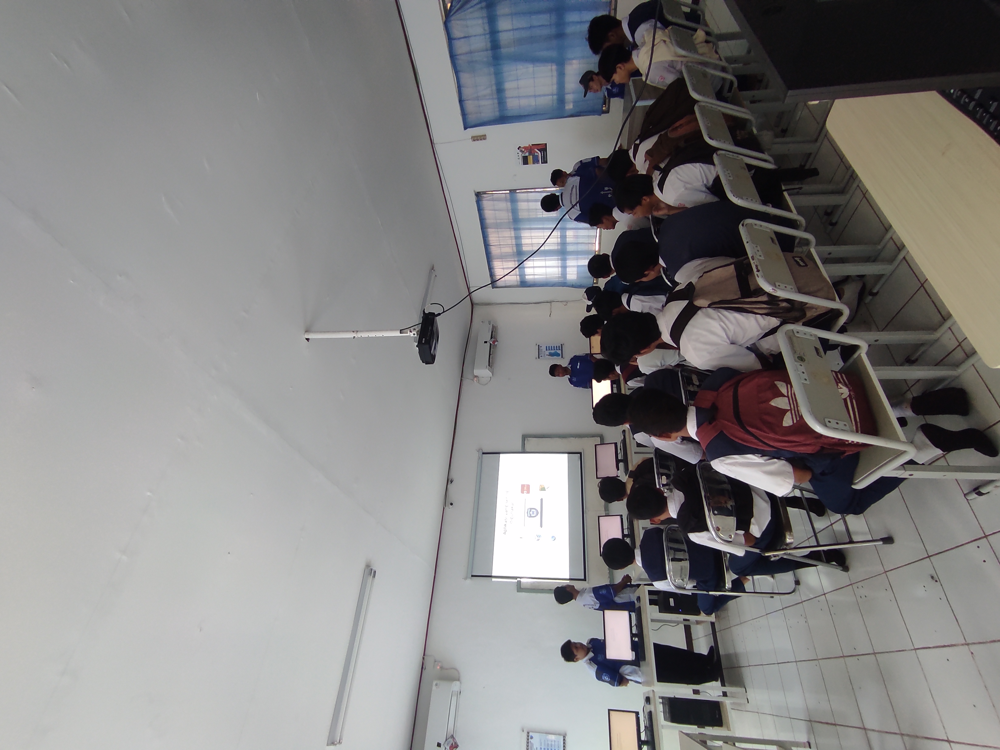
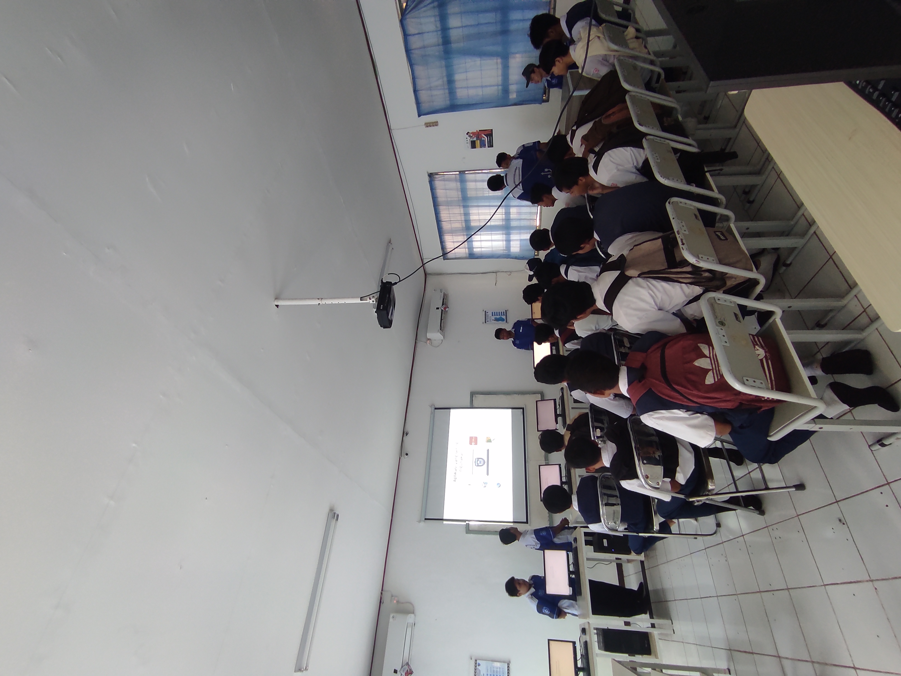

Berita
 

Kegiatan P5 dan Expo Jurusan TJKT di Smkn 1 Gunung Sindur
29, Juni 2023Projek penguatan profil pelajar Pancasila dan open house yang diadakan oleh SMKN 1 Gunungsindur adalah suatu inisiatif yang sangat baik. Dalam projek ini, SMKN 1 Gunungsindur bertujuan untuk memperkuat pemahaman dan kesadaran siswa terhadap nilai-nilai Pancasila sebagai dasar negara Indonesia. Open house juga memberikan kesempatan bagi masyarakat dan calon siswa untuk melihat langsung potensi dan prestasi yang dimiliki oleh sekolah.
Dalam penguatan profil pelajar Pancasila, SMKN 1 Gunungsindur dapat melibatkan berbagai kegiatan yang
bertujuan untuk memperkuat pemahaman siswa terhadap nilai-nilai Pancasila.
Hal ini dapat memberikan pemahaman yang lebih mendalam tentang nilai-nilai Pancasila dan relevansinya
dalam kehidupan sehari-hari.
Pelatihan karakter, Melakukan pelatihan karakter yang fokus pada nilai-nilai Pancasila, seperti gotong royong, kejujuran, persatuan, dan lain-lain. Pelatihan ini dapat dilakukan melalui kegiatan ekstrakurikuler atau kegiatan khusus di sekolah.
Lomba dan kompetisi, Mengadakan lomba dan kompetisi yang berhubungan dengan nilai-nilai Pancasila, seperti lomba pidato, lomba membuat poster, atau lomba menulis esai. Hal ini akan mendorong siswa untuk lebih mendalami dan mengaplikasikan nilai-nilai Pancasila dalam kegiatan sehari-hari.
Selain itu, open house yang diadakan oleh SMKN 1 Gunungsindur dapat menjadi kesempatan yang baik untuk memperkenalkan sekolah kepada masyarakat dan calon siswa. SMKN 1 GunungSindur sudah didatangi banyak siswa/i SMP sekitarnya. banyak sekali siswa/i yang antusias dengan pengenalan lingkungan sekolah SMKN 1 GunungSindur, dimulai dari Expo jurusan hingga membeli makanan ringan di area Bazar P5 sambil melihat pertunjukan seni maupun ekskul dari kawan-kawan SMK.
Serta banyak Kegiatan interaktif, Mengadakan kegiatan interaktif, seperti workshop atau demonstrasi praktik, yang melibatkan calon siswa. Hal ini dapat memberikan pengalaman langsung dan kesempatan untuk berinteraksi dengan guru dan siswa sekolah.
Dengan mengadakan projek penguatan profil pelajar Pancasila dan open house, SMKN 1 Gunungsindur akan memberikan kontribusi positif dalam meningkatkan pemahaman siswa terhadap nilai-nilai Pancasila dan memperkenalkan sekolah kepada masyarakat. Semoga projek ini sukses dan memberikan dampak yang baik bagi siswa dan sekolah.